Water, Sanitation and Hygiene (WASH) Project – Zomba, Malawi - Final Report
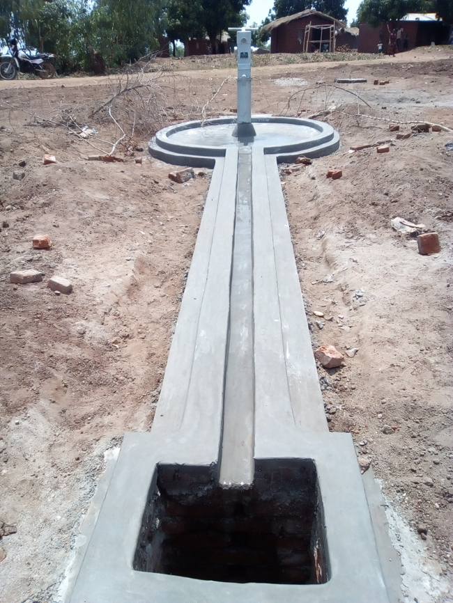
In Phetembe Village, one of the completed borehole wells including a soak wayIntroduction
Through this project, five impoverished and vulnerable rural communities of Traditional Authority Nkagula in Zomba District, Malawi benefited from WASH improvements and trainings.
The villages are Chidule, Libwalo, Phetembe, Khanda, and Samani, with an estimated 1,550 households (about 8,370 people).
The project is funded through the generous support of the Rotary Club of Downers Grove, Illinois, working through the Rotary Club of Blantyre and implemented by Villages in Partnership (VIP), an NGO operating in Malawi.
Rural villages in the Zomba District suffer extreme poverty and high rates of preventable and treatable disease. Access to clean water and improved sanitation is far more restricted than in urban areas. Improving access to clean water and sanitation is therefore critical to improving quality of life and health among these village beneficiaries.
Background
All households (estimated 1,550 households, with an estimated population of 8,370) in the five villages of Chidule, Libwalo, Phetembe, Khanda, and Samani will benefit from the WASH elements and trainings proposed through this project. Beneficiaries include women, men, and children across these rural communities.
Rural villages in Zomba District experience extreme poverty, high rates of preventable and treatable disease, and elevated risk of early death. Their access to clean water and improved sanitation is much more restricted than in urban areas, making WASH interventions especially critical in this context.
Rationale for proposed activities
The project helped prevent infections and diseases and allowed communities to access clean, safe water for good health. Rotary Club of Downers Grove (through Blantyre Rotary Club) and Villages in Partnership are ideal partners to help communities meet their needs:
- Deep roots and track record – Partners have long-standing presence in the region and a successful record of meeting similar needs in many other Zomba District villages.
- Community-driven approach – Partners establish strong relationships with villages, solicit needs and priorities from the communities themselves, and combine local and external resources to meet those needs. This fosters a sense of ownership through village committees.
- Commitment to sustainability – Sustainability is built in through trainings for village committees on maintenance and repair of WASH elements, organizing villagers into water committees, and establishing monthly user fees to fund ongoing maintenance and repairs.
Key Partners In The Project
At the district and community levels, this project relied upon the participation of District Health Office staff for sanitation and hygiene, District Water Development Office staff for Water issues and BASEDA and Evidence Action staff partner NGOs working in Boreholes' maintenances and marketing and chlorination issues respectively in the same catchment area.
VIP/ Rotary partnership implemented its Water, Sanitation and Hygiene Project to complement the government of Malawi's efforts to ensure availability and sustainable management of water and sanitation for all.
Scope of work
Water, sanitation, and hygiene (WASH) elements implemented under the project include:
- Drilling five boreholes to provide access to clean water.
- Promotion of sanitary structures for good hygiene in communities.
- Providing hand-washing stations close to pit latrines in villages and at schools within the catchment area.
- Construction of two communal hand-washing stations.
- Setting up bamboo dish racks for drying clean dishes off the ground.
- Providing capacity-building trainings to borehole and water committees for maintenance and sustainability.
Identified community needs
During the assessment, communities identified the following priority needs:
- Safe water through boreholes and, where possible, taps.
- Permanent pit latrines with slabs.
- Durable hand-washing facilities, including in schools.
- Plastic toilet seats for disabled and elderly persons.
- Improved bathrooms.
- Separate changing-room pit latrines for girls during menstrual periods in schools in the area.
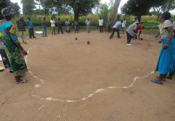
Assessment mapping exercise
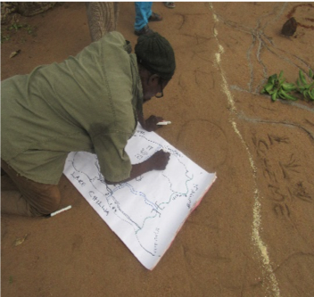
Capturing the map
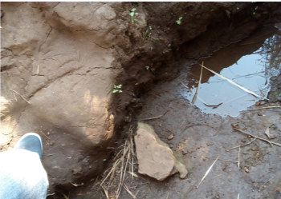
A shallow water source in the area where some people get water
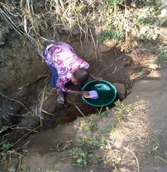
The project sought to address this problem.Conduct Hydro survey in the five villages
After the identification of the contractor to conduct the hydro survey was done, the contractor was brought onsite from Blantyre. Two priority areas were identified based on earmarked potential areas in the five villages. A report of the activity was submitted by the assigned contractor and shared with Rotary Blantyre.
Borehole Drilling
- In the final result, it was identified out that Samani and Khanda villages would require mud drilling and the rest would require air drilling.
- When the drilling process started in the Chidule and Phetembe Villages, it was sad to note that we experienced three dry holes, one in Phetembe and two in Chidule village. VIP had to consult the Hydro Survey for repositioning of the sites. After gathering information of such experience of water shortage, it was shared that even the Muslim Agency have twice failed to drill boreholes in the same villages. That's why VIP thought of repositioning.
- After the second attempt, Chidule, Phetembe, Samani and Libwalo Villages had borehole wells waiting for civil works.
- When the Hydro survey was engaged for the repositioning, it was noted that Khanda Village which needs mud drilling was supposed to be changed as well. Note that Samani and Khanda Villages are close to the Lake Chilwa have dump soils here in Zomba.
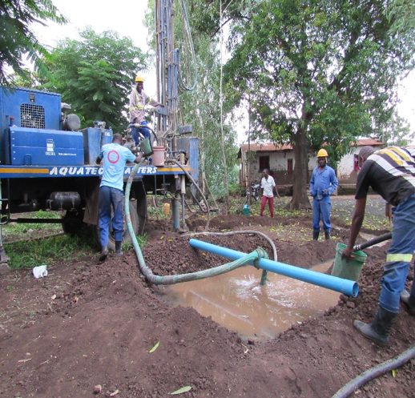
Mud drilling at Samani Village
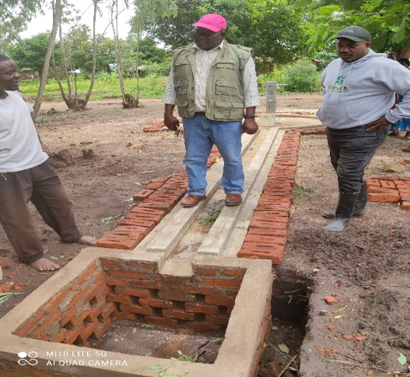
Monitoring and supervision visit to Samani Village
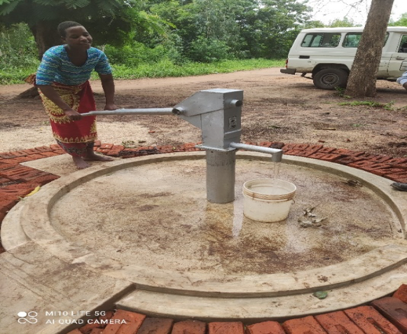
A women drawing water from a finished wellResidents, VIP staff and drillers dancing after they struck water in Chidule on the third attempt
Progress made in the project
The project achieved the following:
- Community needs assessment conducted in the target villages.
- Responses prepared for Global Grant questions and clarifications.
- Mapping of the five identified project villages.
- Identification of a hydro-survey contractor through IPC processes.
- Hydro survey conducted in the five villages, each with two priority areas.
- Hydro survey report submitted.
- Identification of a borehole drilling contractor through IPC processes.
- Drilling of five borehole wells.
- Project mobilization meetings held at district and community levels.
- Conduct CBM training to five borehole committees.
- Provision of borehole starter pack tools to five borehole committees.
- Conduct refresher training for six Area Mechanics.
- Conduct trainings to five borehole committees in Data collection.
Sustainability
Suggestions to Sustain the WASH Initiative
Village water committees are established to oversee all operations. This includes the mechanics ongoing training, provide security of wells, pumps and handwashing stations and collecting monthly user fees. These fees are used to fund maintenance and repair of village equipment.
Rotary Team Monitoring Visit To Project
All of the five villages were visited by the Blantyre Rotary Team to learn how borehole water supply was done. A few focal persons like chiefs and borehole leaders were engaged to hear their feedback on the water supply. Beneficiaries are extremely happy and appreciate the reduced burden on distance to and from water sources.
Water quality testing report for boreholes drilled and constructed with support from Rotary/VIP Malawi in zomba district
1.0 INTRODUCTION
Below are the E. Coli test results of five (5) water samples collected from boreholes constructed with financial support from Rotary Club -- Blantyre implemented by Villages in Partnership Malawi (VIP) in Zomba District. Water sampling of the five (5) boreholes was done on the 24^th^ of September 2022 by our water quality personnel under the guidance and supervision of personnel (Laston Kasimu -- Community Worker and Ernesto Makoka -- Coordinator) from Village in Partnership Malawi. The villages were; Chidule, Libwalo, Phetembe, Samani and Khanda of TA Nkagula in Zomba District.
2.0 METHODOLOGY
The laboratory analysis was done in accordance with Standards Methods for Examination of Water and Wastewater (APHA-AWWA-WPCF) 23^rd^ Edition. Two (2) indicators of microbiological quality of drinking water, namely, Faecal (Thermotolerant) coliform and Faecal streptococcus type of bacteria, were enumerated in the water from all five (5) boreholes under review. The water quality data generated has been compared with Malawi Standards for drinking water delivered from boreholes and shallow wells (MS733:2013) in order to check for compliance.
3.0 LABORATORY TEST RESULTS
The laboratory test results for the five (5) Village in Partnership (VIP) are shown in Tables 1-5.
TABLE 1: WATER QUALITY TEST RESULTS FOR SAMANI VILLAGE BOREHOLE
| Item | Result | Malawi Standard (MS733:2005) |
|---|---|---|
| LAB No. | 224 | Boreholes & protected shallow wells |
| Date sampled | 24‑09‑2022 | |
| Time sample taken | 11:35 | |
| Time in (incubator) | 13:50 (24‑09‑2022) | |
| Time out (incubator) | 19:50 (25‑09‑2022) | |
| Water resource unit | — | |
| Map sheet / grid ref. | — | |
| Source type / location | Samani VGE – Tiyanjane Borehole, Zomba District | |
| Faecal Coli / 100 ml | 0 | 50 |
| Faecal Streptococcus / 100 ml | 0 | 0 |
TABLE 2: WATER QUALITY TEST RESULTS KHANDA VILLAGE BOREHOLE
| Item | Result | Malawi Standard (MS733:2005) |
|---|---|---|
| LAB No. | 225 | Boreholes & protected shallow wells |
| Date sampled | 24‑09‑2022 | |
| Time sample taken | 11:55 | |
| Time in (incubator) | 13:50 (24‑09‑2022) | |
| Time out (incubator) | 19:50 (25‑09‑2022) | |
| Water resource unit | — | |
| Map sheet / grid ref. | — | |
| Source type / location | Khanda VGE – Malayina Borehole, Zomba District | |
| Faecal Coli / 100 ml | 0 | 50 |
| Faecal Streptococcus / 100 ml | 0 | 0 |
TABLE 3: WATER QUALITY TEST RESULTS LIBWALO VILLAGE BOREHOLE
| Item | Result | Malawi Standard (MS733:2005) |
|---|---|---|
| LAB No. | 226 | Boreholes & protected shallow wells |
| Date sampled | 24‑09‑2022 | |
| Time sample taken | 11:09 | |
| Time in (incubator) | 13:50 (24‑09‑2022) | |
| Time out (incubator) | 19:50 (25‑09‑2022) | |
| Water resource unit | — | |
| Map sheet / grid ref. | — | |
| Source type / location | Libwalo VGE – Takondwa Borehole, Zomba District | |
| Faecal Coli / 100 ml | 0 | 50 |
| Faecal Streptococcus / 100 ml | 0 | 0 |
TABLE 4: WATER QUALITY TEST RESULTS CHIDULE VILLAGE BOREHOLE
| Item | Result | Malawi Standard (MS733:2005) |
|---|---|---|
| LAB No. | 227 | Boreholes & protected shallow wells |
| Date sampled | 24‑09‑2022 | |
| Time sample taken | 12:21 | |
| Time in (incubator) | 13:50 (24‑09‑2022) | |
| Time out (incubator) | 19:50 (25‑09‑2022) | |
| Water resource unit | — | |
| Map sheet / grid ref. | — | |
| Source type / location | Chidule VGE – Dalitso Borehole, Zomba District | |
| Faecal Coli / 100 ml | 0 | 50 |
| Faecal Streptococcus / 100 ml | 0 | 0 |
TABLE 5: WATER QUALITY TEST RESULTS PHETEMBE VILLAGE BOREHOLE
| Item | Result | Malawi Standard (MS733:2005) |
|---|---|---|
| LAB No. | 228 | Boreholes & protected shallow wells |
| Date sampled | 24‑09‑2022 | |
| Time sample taken | 12:34 | |
| Time in (incubator) | 13:50 (24‑09‑2022) | |
| Time out (incubator) | 19:50 (25‑09‑2022) | |
| Water resource unit | — | |
| Map sheet / grid ref. | — | |
| Source type / location | Phetembe VGE – Namanolo Borehole, Zomba District | |
| Faecal Coli / 100 ml | 0 | 50 |
| Faecal Streptococcus / 100 ml | 0 | 0 |
4.0 DISCUSSION OF RESULTS
The laboratory test results have shown that all five boreholes under review are producing safe water, which is fit for human consumption without requiring further mode of treatment. This is evident as all the 5 boreholes did not register any colony of the two indicator bacteria enumerated. It is known that the absence of indicator bacteria shows that disease causing (pathogens) are also absent. Similarly, the presence of indicator organisms indicates that pathogens are also present.
5.0 CONCLUSION AND RECOMMENDATION
The laboratory analysis of the 5 boreholes under review has established that water from all 5 boreholes drilled and constructed with financial support from Village in Partnership Malawi in Zomba District are producing safe water, without requiring further treatment, as it is in compliance with Malawi Drinking Water Quality Standards (MS733:2013) for boreholes and protected shallow wells.
CONSTRUCTION OF PUBLIC HANDWASHING FACILITIES.
The project has constructed 2 public handwashing facilities at Govala and Majiga Markets. In order to achieve this goal, the project identified a local contractor who provided all civil works. Zomba East Water Users Association, as water scheme owners, were identified to provide plumbing services as required. All tools and materials for this activity were procured by project.
The key objective is to promote handwashing practices in the prevention of diarrheal diseases and COVID19.
The two proposed public handwashing facilities and civil works have been completed, and are waiting for water connections by Songani Water User Association.
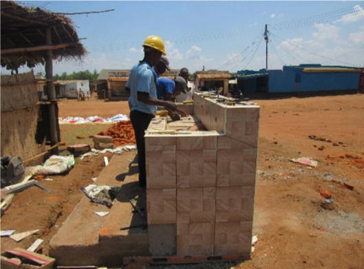
Govala handwashing facility under construction
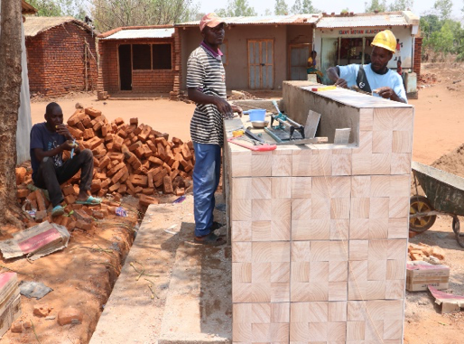
Majiga handwashing facility under constructionFINANCIALS -- DECEMBER 2022
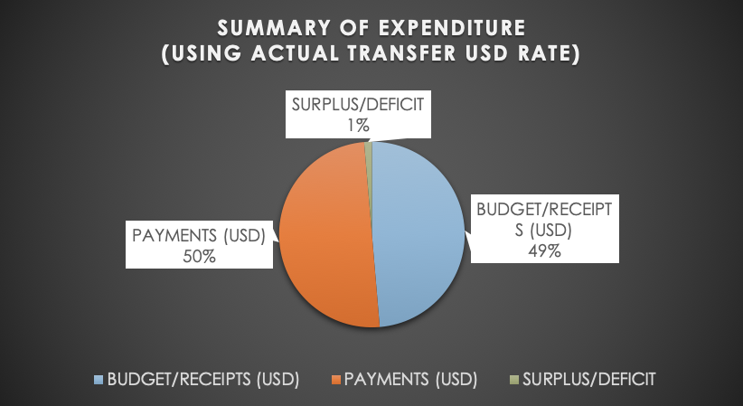
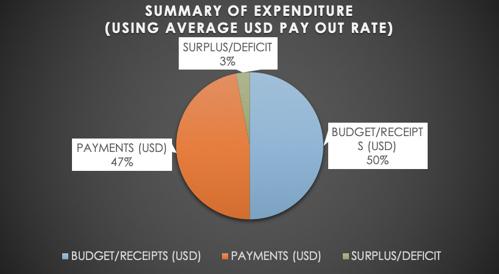
EXCHANGE RATES
- JANUARY -- MAY: 825/\$
- JUNE -DECEMBER: 1036.2494/\$
- AVERAGE RATE: 930.62 /\$
STATEMENT OF EXPENSES - BUDGET vs ACTUAL
| Ref number on budget |
Category | Description | Budget Cost $ | ACTUAL (MK) | ACTUAL (USD) | |||||||
| 1 | Operations | Hydro Survey | $2,000.00 | MK1,070,000.00 | $1,296.97 | |||||||
| 2&3 | Public relations | Five village mobilisation meetings & Locate resources | $2,000.00 | MK2,243,000.00 | $2,243.86 | |||||||
| 5 | Operations | Install two market place handwashing facilities | $1,200.00 | MK1,715,196.25 | $1,655.20 | |||||||
| 6 | Operations | 5 Hand Pumps | $1,100.00 | MK9,773,000.93 | $11,846.06 | |||||||
| 7 | Operations | Water quality testing | $1,000.00 | MK839,382.50 | $1,017.43 | |||||||
| 8 | Supplies | Household handwashing stations | $100.00 | MK300,000.00 | $289.51 | |||||||
| 10 | Publicity | Education IEC, Training materials | $1,000.00 | MK1,179,000.00 | $1,429.09 | |||||||
| 11 | Equipment | 5 Maintenance Starter kits | $260.00 | MK465,972.50 | $564.82 | |||||||
| 12 | Training | Village Mechanics | $1,130.00 | MK932,250.00 | $1,130.00 | |||||||
| 13 | Training | Village Water Council | $600.00 | MK495,000.00 | $600.00 | |||||||
| 14 | Training | M & E Basics | $360.00 | MK297,000.00 | $360.00 | |||||||
| 15 | Training | Data Collection Methods | $300.00 | MK247,500.00 | $300.00 | |||||||
| 16 | Training | Village Level Hygiene | $750.00 | MK618,750.00 | $750.00 | |||||||
| 17 | Training | Local Schools Hygiene | $400.00 | MK709,272.03 | $766.00 | |||||||
| 18 | Training | Mechanics Advanced Course | $700.00 | MK2,203,962.50 | $2,269.57 | |||||||
| 19 | Training | Market Place Hygiene | $750.00 | MK1,291,759.60 | $1,399.47 | |||||||
| 20 | Supplies | Hygiene Supplies | $750.00 | MK618,750.00 | $750.00 | |||||||
| 21 | Project Management | Contingency Fund | $1,100.00 | MK907,500.00 | $1,100.00 | |||||||
| 4&9 | Operations | Drilling Contractor | $35,000.00 | MK18,253,651.41 | $22,125.64 | |||||||
| TOTAL | $50,500.00 | $44,160,947.72 | $51,893.61 | |||||||||
| DEFICIT | USD 1393.61 | |||||||||||